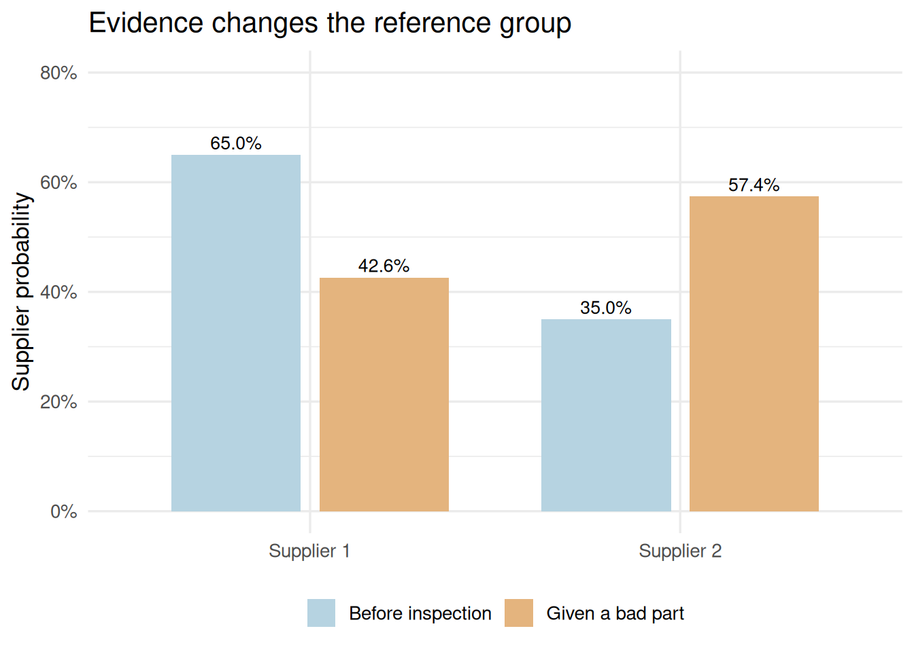

# library(): loads a package so its functions can be used in this session.
# read.csv(): reads a comma-separated file into a data frame; its first row supplies column names by default.
# stopifnot(): stops execution if any supplied condition is FALSE; successful checks produce no output.
# length(): counts elements in a vector or list.
# sum(): adds vector entries; on logical values it counts TRUE entries.
# theme_set(): sets the default theme for subsequent ggplot charts in this R session.
# theme_minimal(): uses a minimal chart style; base_size controls the base text size in points.
# Recreate the same events so conditioning changes the reference group rather than the data.
# mean(A[B]) averages A only within records satisfying B; this requires at least one B record.
library(ggplot2)
library(knitr)
r <- read.csv("data/module02/restaurant_ratings.csv")
A <- r$quality_rating == "Very Good"
B <- r$meal_price_usd >= 20 & r$meal_price_usd < 30
stopifnot(length(A) == 300, sum(B) == 118, sum(A) == 150, sum(A & B) == 64)
theme_set(theme_minimal(base_size = 13))Module 3: Conditional Probability
Lesson 2 | Change the reference group and update a probability
What we will learn
A condition changes the outcomes still under consideration. We connect the conditional percentages in Module 2 to probability notation, test independence within a specified experiment, and use Bayes’ theorem to reverse a conditional question.
Reading: main textbook, §4.4, printed pp.193–198, and §4.5, pp.201–205. Complete Lesson 1 first.
Business case: the same restaurants, a new condition
One record is selected uniformly from the 300 historical Los Angeles restaurants. The analyst now learns that its meal price is from USD 20 up to but not including USD 30. Among records meeting this condition, what is the probability of a Very Good rating? How does that answer differ from asking for the price band among Very Good restaurants?
يُختار سجل واحد باحتمالات متساوية من بيانات ثلاثمئة مطعم تاريخي في لوس أنجلوس. يعرف المحلّل الآن أن سعر الوجبة في المطعم المختار من 20 دولارًا إلى أقل من 30 دولارًا أمريكيًا. داخل السجلات التي تحقق هذا الشرط، ما احتمال أن يكون التقييم Very Good؟ وكيف تختلف الإجابة عن احتمال الانتماء إلى الفئة السعرية نفسها بين المطاعم ذات التقييم Very Good؟
Conditional probability uses a restricted denominator
For \(P(B)>0\),
\[P(A\mid B)=\frac{P(A\cap B)}{P(B)}.\]
The bar means given. It restricts the reference group to \(B\). For our selection, 64 restaurants satisfy both conditions, while 118 satisfy the known price condition:
\[P(A\mid B)=\frac{64/300}{118/300}=\frac{64}{118}\approx0.5424.\]
Reversing the condition changes the denominator:
\[P(B\mid A)=\frac{64}{150}\approx0.4267.\]
# data.frame(): builds a table whose named columns have compatible lengths.
# c(): combines values into a vector, converting them to a common type when needed.
# rep(): repeats values; times repeats a vector and each repeats individual elements.
# sum(): adds vector entries; on logical values it counts TRUE entries.
# nrow(): returns the number of rows in a table or matrix.
# The numerator counts the same intersection, but each denominator matches its condition.
# kable() reports both directions and the joint probability to make the distinction visible.
comparison <- data.frame(Question = c("A and B", "A given B", "B given A"),
Numerator = rep(sum(A & B), 3),
Denominator = c(nrow(r), sum(B), sum(A)))
comparison$Probability <- comparison$Numerator / comparison$Denominator
kable(comparison, digits = 4)| Question | Numerator | Denominator | Probability |
|---|---|---|---|
| A and B | 64 | 300 | 0.2133 |
| A given B | 64 | 118 | 0.5424 |
| B given A | 64 | 150 | 0.4267 |
Interpretation: 54.24% of restaurants in that price band are Very Good; 42.67% of Very Good restaurants are in that band. Neither is the 21.33% share of all records that satisfy both conditions. If \(P(B)=0\), this elementary conditional probability is undefined; do not divide by zero.
Multiplication and independence
Rearranging the conditional formula gives the general multiplication rule:
\[P(A\cap B)=P(B)P(A\mid B).\]
Events are independent when \(P(A\cap B)=P(A)P(B)\). If \(P(B)>0\), this is equivalent to \(P(A\mid B)=P(A)\): knowing \(B\) leaves the probability of \(A\) unchanged.
# mean(): computes an average; logical TRUE/FALSE values contribute 1/0, giving a proportion.
# kable(): formats a data frame or matrix as a readable report table; digits sets displayed precision.
# data.frame(): builds a table whose named columns have compatible lengths.
# c(): combines values into a vector, converting them to a common type when needed.
# isTRUE(): returns TRUE only for a single nonmissing logical TRUE.
# Compare the actual joint probability with the product required by independence.
# all.equal() allows numerical tolerance; it does not perform a population hypothesis test.
joint <- mean(A & B)
product_if_independent <- mean(A) * mean(B)
kable(data.frame(Quantity = c("Actual P(A and B)", "P(A) times P(B)"),
Probability = c(joint, product_if_independent)), digits = 4)| Quantity | Probability |
|---|---|
| Actual P(A and B) | 0.2133 |
| P(A) times P(B) | 0.1967 |
isTRUE(all.equal(joint, product_if_independent))[1] FALSEThese events are dependent for uniform selection from these 300 records. That statement is an arithmetic property of the specified finite experiment, not an inferential test about a wider population.
NoteIndependent and mutually exclusive mean different things
Mutually exclusive events cannot occur together. Independent events leave each other’s probability unchanged. If two mutually exclusive events both have positive probability, they cannot be independent: their joint probability is zero, while the product of their probabilities is positive.
Selection without replacement
Suppose two records are selected successively and the first is not returned. If the first is Very Good, only 149 Very Good records among 299 remaining records are available for the second selection. Thus,
\[P(\text{both Very Good})=\frac{150}{300}\frac{149}{299}.\]
With replacement and independent selections, the corresponding probability is \((150/300)^2\). The mechanism determines whether the same probability can be multiplied twice.
Business case: which supplier produced a bad part?
In the book’s manufacturing example, 65% of parts come from supplier 1 and 35% from supplier 2. The stated bad-part probabilities are 2% for supplier 1 and 5% for supplier 2. One purchased part is selected at random and found to be bad. What is the probability that it came from supplier 2? One outcome concerns one part; these are the textbook’s probability inputs, not newly collected inspection observations.
في مثال التصنيع في الكتاب، يأتي 65% من القطع من المورّد الأول و35% من المورّد الثاني. واحتمال أن تكون القطعة معيبة هو 2% لدى المورّد الأول و5% لدى المورّد الثاني. تُختار قطعة مشتراة عشوائيًا ويتبيّن أنها معيبة. ما احتمال أن تكون من المورّد الثاني؟ تتعلق النتيجة بقطعة واحدة؛ وهذه احتمالات معطاة في الكتاب، وليست مشاهدات فحص جُمعت حديثًا.
Total probability and Bayes’ theorem
Let \(S_1,S_2\) denote the two suppliers and \(D\) a bad part. The suppliers are mutually exclusive and cover all parts. Multiply along each supplier-and-condition path, then add the disjoint bad-part paths:
\[P(D)=P(S_1)P(D\mid S_1)+P(S_2)P(D\mid S_2).\]
Bayes’ theorem restricts those paths to the ones consistent with the new information:
\[P(S_2\mid D)=\frac{P(S_2)P(D\mid S_2)}{P(D)}.\]
# data.frame(): builds a table whose named columns have compatible lengths.
# c(): combines values into a vector, converting them to a common type when needed.
# sum(): adds vector entries; on logical values it counts TRUE entries.
# stopifnot(): stops execution if any supplied condition is FALSE; successful checks produce no output.
# abs(): returns absolute values; a small tolerance in an equality check permits floating-point rounding.
# kable(): formats a data frame or matrix as a readable report table; digits sets displayed precision.
# These priors and bad-part rates are stated model inputs from textbook p.201, not raw data.
# Multiply within each supplier path, then divide by the total bad-part probability.
suppliers <- data.frame(Supplier = c("Supplier 1", "Supplier 2"),
Prior = c(0.65, 0.35), Bad_given_supplier = c(0.02, 0.05))
suppliers$Joint_bad <- suppliers$Prior * suppliers$Bad_given_supplier
p_bad <- sum(suppliers$Joint_bad)
suppliers$Supplier_given_bad <- suppliers$Joint_bad / p_bad
stopifnot(abs(p_bad - 0.0305) < 1e-12,
abs(sum(suppliers$Supplier_given_bad) - 1) < 1e-12)
kable(suppliers, digits = 4)| Supplier | Prior | Bad_given_supplier | Joint_bad | Supplier_given_bad |
|---|---|---|---|---|
| Supplier 1 | 0.65 | 0.02 | 0.0130 | 0.4262 |
| Supplier 2 | 0.35 | 0.05 | 0.0175 | 0.5738 |
The probability of a bad part is 0.0305. Among bad parts, supplier 2 accounts for \(0.0175/0.0305\approx0.5738\), or 57.38%. This reverses \(P(D\mid S_2)=0.05\); the two conditional probabilities answer different questions. Supplier 2 has a smaller prior share but a higher stated bad-part rate.
# data.frame(): builds a table whose named columns have compatible lengths.
# rep(): repeats values; times repeats a vector and each repeats individual elements.
# c(): combines values into a vector, converting them to a common type when needed.
# ggplot(): starts a plot from data; additional layers are joined with +.
# aes(): maps variables to visual properties such as x, y, fill, color, or group.
# geom_col(): draws bars at supplied heights; it does not count records.
# position_dodge(): places groups side by side; width controls their horizontal separation.
# geom_text(): draws labels from mapped data; position and hjust/vjust control placement.
# sprintf(): formats text using placeholders such as %.2f for two decimal places.
# scale_fill_manual(): assigns explicit fill colors to categories; named values preserve category-color mappings.
# scale_y_continuous(): controls numeric y-axis breaks, labels, limits, and spacing.
# paste0(): joins text with no separator; collapse can combine a vector into one string.
# labs(): sets axis titles, legend titles, plot titles, and captions.
# theme(): customizes non-data plot elements such as legends, grids, and axis text.
# Compare supplier shares before inspection with shares conditional on a bad part.
# Fixed y limits and direct labels keep the prior/posterior comparison on the same scale.
plot_data <- data.frame(Supplier = rep(suppliers$Supplier, 2),
Information = rep(c("Before inspection", "Given a bad part"), each = 2),
Probability = c(suppliers$Prior, suppliers$Supplier_given_bad))
ggplot(plot_data, aes(Supplier, Probability, fill = Information)) +
geom_col(position = position_dodge(width = 0.8), width = 0.7) +
geom_text(aes(label = sprintf("%.1f%%", 100 * Probability)),
position = position_dodge(width = 0.8), vjust = -0.4, size = 3.5) +
scale_fill_manual(values = c("#B6D3E1", "#E4B47E")) +
scale_y_continuous(limits = c(0, 0.8), labels = function(x) paste0(100 * x, "%")) +
labs(x = NULL, y = "Supplier probability", fill = NULL,
title = "Evidence changes the reference group") +
theme(legend.position = "bottom")
Original R chart calculated from the book’s two-supplier probability inputs, Table 4.6 and accompanying text, p.201.
A calculation sequence to remember
- Identify the event and the information being conditioned on.
- Write the relevant joint paths and multiply their probabilities.
- Add disjoint paths to obtain the denominator.
- Divide the relevant joint probability by that denominator.
- Interpret the result in the restricted group and state the input assumptions.
Complete Lesson 2 practice, then continue to discrete random variables.
Sources and limits
Anderson et al. (2020), 8th ed., §4.4, pp.193–198, and §4.5, pp.201–205. Restaurant calculations reuse the checked CSV, with the documented aggregate verification limits. Supplier shares and conditional rates were checked directly against the local book PDF, p.201; no individual parts or inspection sample sizes are supplied or invented. Historical rates are accepted as inputs to the example, not established as current supplier performance.